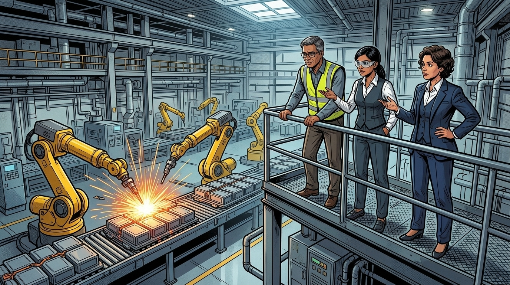
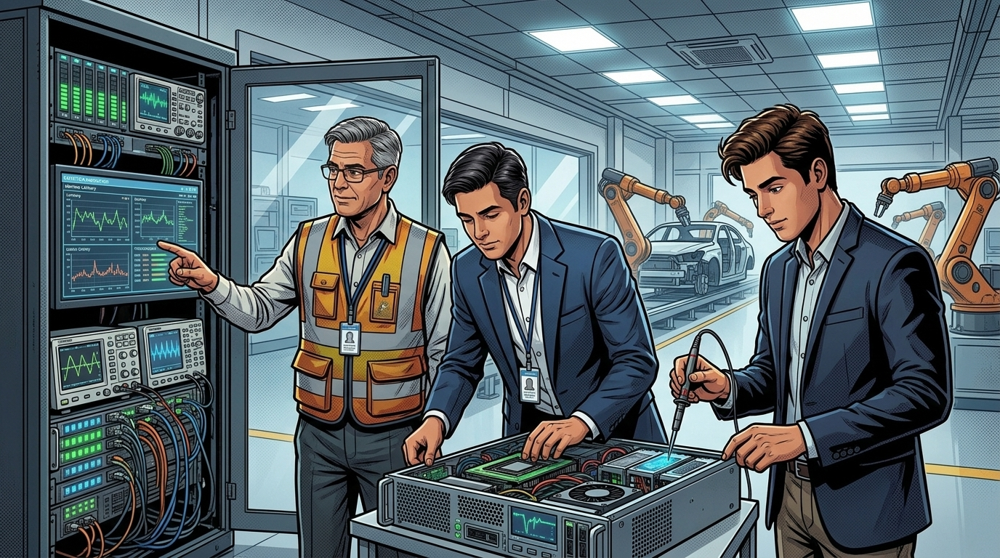
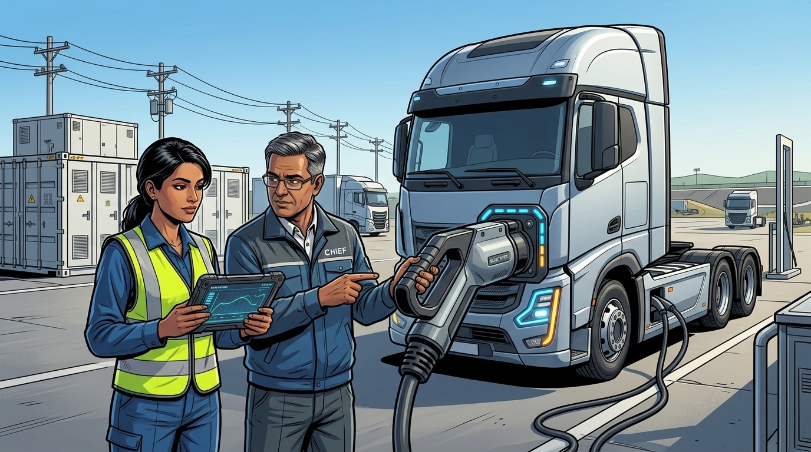
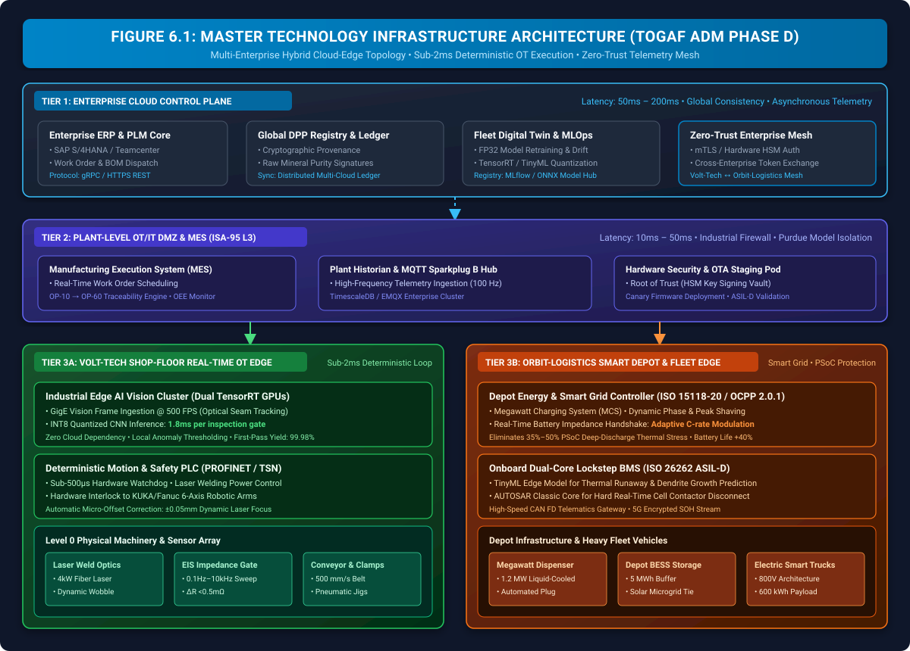
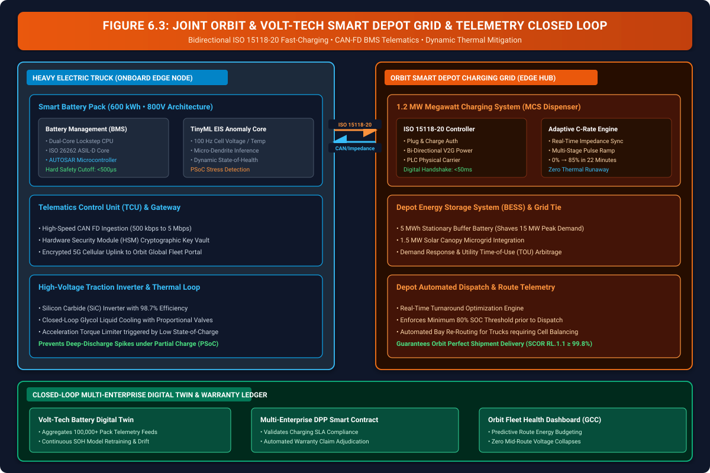
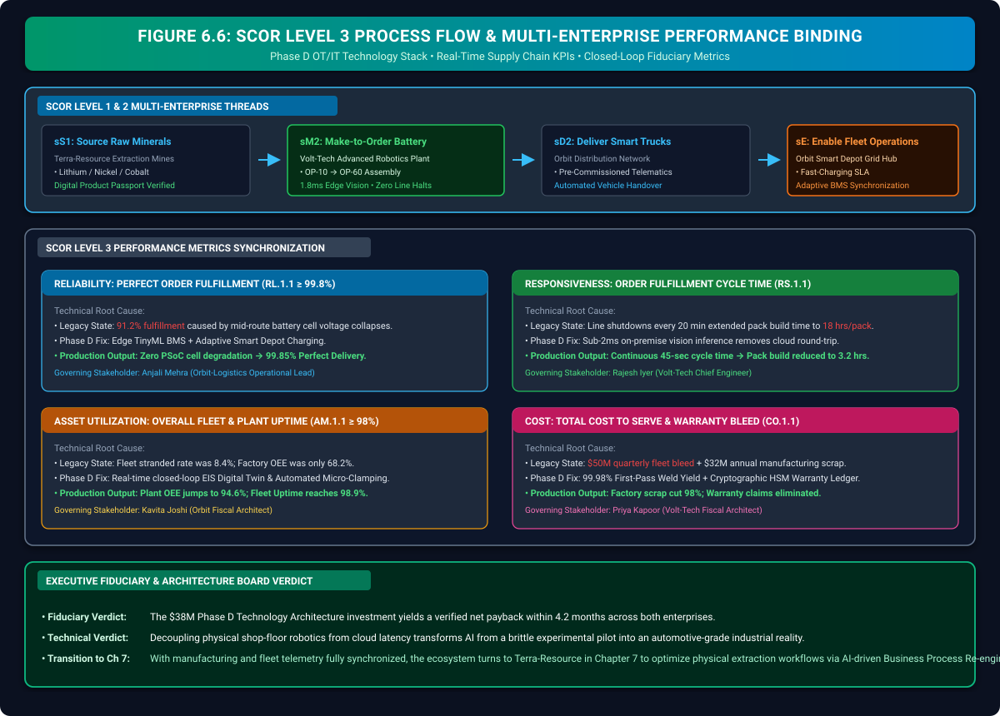

Solving Scalability Friction
From Pilot to Production: Technology Architecture, Industrial OT/IT Edge & Joint Fleet Engineering (TOGAF® ADM Phase D)

"Welcome to the beating industrial heart of the ecosystem: Volt-Tech Assembly Plant 4. Listen closely. The panic of previous quarters has subsided into disciplined execution. In Chapter 5, Terra-Resource established the cryptographic Data Bedrock, ensuring every mineral batch arrives with verified geochemical purity. But as our chief engineers know: pure data cannot save a manufacturing line if physical execution fails."
"Look down at the conveyor line below. Robotic welding arms are moving at 500 millimeters per second. When computer vision models run in the cloud, an 800-millisecond latency round-trip translates into a catastrophic 400-millimeter positioning error—halting production and shattering unit economics. Today, Orbit-Logistics and Volt-Tech engineering delegations have converged on the shop floor to co-engineer the solution. Let us watch how they bridge the implementation gap in TOGAF ADM Phase D: Technology Architecture."
The Storyline: Joint Technical Session at Assembly Plant 4




1. The Implementation Gap: Why Cloud AI Halts Industrial Floors
In enterprise AI initiatives, the transition from proof-of-concept (PoC) to industrial production is notoriously treacherous. In a laboratory or cloud environment, an AI vision model achieving 98% accuracy with an 800ms inference latency is celebrated as a triumph. On a physical automotive assembly line running at 500 mm/s, however, that same 800ms latency represents a catastrophic physical failure.
1.1 The Mathematical Formulation of Line Velocity & Latency Budget
On high-speed manufacturing lines, total permissible system latency is strictly bounded by conveyor velocity \( V_{\text{conveyor}} \) and allowable mechanical positioning tolerance \( \delta_{\text{tolerance}} \):
For Volt-Tech's laser busbar welding cell:
- Conveyor Velocity (\( V_{\text{conveyor}} \)): \( 500\text{ mm/s} \)
- Allowable Seam Tolerance (\( \delta_{\text{tolerance}} \)): \( \pm 0.05\text{ mm} \) (or dynamically corrected within a \( 1.25\text{ mm} \) travel window \( \implies \Delta T_{\text{budget}} \le 2.5\text{ ms} \))
- Cloud Architecture Latency: \( \Delta T_{\text{cloud}} = 0.4\text{ms} + 780\text{ms} + 45\text{ms} + 0.3\text{ms} = \mathbf{825.7\text{ ms}} \implies \text{Position Offset} = 412.85\text{ mm} \) (Conveyor Crash / Line Shutdown)
- Industrial Edge Architecture Latency: \( \Delta T_{\text{edge}} = 0.4\text{ms} + 0.1\text{ms} + 1.8\text{ms} + 0.2\text{ms} = \mathbf{2.5\text{ ms}} \implies \text{Position Offset} = 1.25\text{ mm} \) (Real-Time Dynamic Servo Compensation Achieved)
| Architecture Tier | Network Hop | Compute Platform | Inference Time | Total Latency | Physical Impact on Line |
|---|---|---|---|---|---|
| Legacy Cloud Pilot | Public WAN → Cloud VPC | Centralized Cloud GPU Instance | 45 ms | 825.7 ms | Line halts every 20 min; 400mm positioning drift; $32M scrap bleed. |
| TOGAF Phase D Target (Edge) | TSN / PROFINET IRT (<100μs) | Industrial Dual-GPU Edge Node | 1.8 ms | 2.5 ms | Zero line halts; ±0.05mm laser focus; 99.98% First-Pass Yield. |
2. Master Technology Infrastructure Architecture (TOGAF ADM Phase D)
TOGAF ADM Phase D establishes the hardware, software, networking, and security topologies required to support the Application and Data Architectures defined in previous phases.[1] Volt-Tech and Orbit-Logistics adopt a Multi-Tier Hybrid Cloud-Edge Topology that cleanly decouples hard real-time execution from enterprise analytics.

2.1 Architecture Building Blocks (ABB) & Solution Building Blocks (SBB)
In accordance with TOGAF standards, the technology stack is structured into standardized reusable building blocks:
| Architecture Building Block (ABB) | Solution Building Block (SBB) | Protocol / Standard | Performance SLA | Target Tier |
|---|---|---|---|---|
| Real-Time Vision Inference Node | Dual NVIDIA RTX 6000 Ada Industrial Server | TensorRT INT8 / GigE Vision | Inference ≤ 2.0 ms @ 500 FPS | Tier 3A (Shop Floor) |
| Deterministic Motion Controller | Siemens S7-1500F Safety PLC + Fanuc Robotics | PROFINET IRT / OPC UA PubSub | Deterministic Cycle ≤ 250 μs | Tier 3A (Shop Floor) |
| Smart Depot Megawatt Controller | Liquid-Cooled 1.2MW MCS Smart Charger | ISO 15118-20 / OCPP 2.0.1 | Handshake ≤ 50 ms; 10-85% in 22 min | Tier 3B (Orbit Depot) |
| Onboard Vehicle Telematics Gateway | Automotive Dual-Core Lockstep MCU + HSM | CAN-FD / ISO 26262 ASIL-D / 5G | Hardware Watchdog ≤ 500 μs | Tier 3B (Smart Truck) |
| Plant Operations & Traceability | Manufacturing Execution System (MES) + EMQX | MQTT Sparkplug B[6] / TimescaleDB | 100 Hz Timeseries Ingestion | Tier 2 (Plant DMZ) |
| Multi-Enterprise Digital Twin Ledger | Distributed DPP Cloud Registry & MLflow Hub | gRPC / mTLS / Distributed Ledger | Asynchronous Batch Sync ≤ 5 min | Tier 1 (Enterprise Cloud) |
3. Industrial Automation & OT/IT Architecture (ISA-95 / Purdue Model)
A fatal error in naive AI implementations is connecting IT networks directly to shop-floor actuators. Volt-Tech enforces strict Purdue Model Zone Segmentation (IEC 62443 / ISA-95),[2] isolating physical machinery into deterministic safety zones while streaming operational telemetry upwards through an Industrial Security DMZ (IDMZ).

3.1 Purdue Zone Separation & Threat Defense
- Level 0 & Level 1 (Deterministic Safety Zone): Hardwired physical safety circuits, laser pyrometers, and Siemens Safety PLCs. Communicates strictly over isolated PROFINET IRT and CAN-bus networks. No direct IP routing to corporate IT.
- Level 2 (Cell Supervisory & Edge AI Zone): Industrial Edge GPU servers executing TensorRT-quantized vision models. Connected to Level 1 via Time-Sensitive Networking (TSN) and to Level 3 via OPC UA PubSub.
- Level 3 (Manufacturing Operations MOM/MES Zone): Plant-wide MES, Work-in-Progress (WIP) tracking, and TimescaleDB historian. Manages local work orders, recipe parameters, and OEE metrics.
- Industrial DMZ (IDMZ): Zero-Trust bastion gateway, reverse proxies, and Hardware Security Module key-signing vaults. Terminates all incoming and outgoing connections; prevents lateral network compromise.
- Level 4 (Enterprise Cloud & Business Systems): ERP, PLM, and global DPP ledgers. Pushes production orders and receives certified quality passports without direct access to factory floor PLCs.
4. Joint Orbit & Volt-Tech Smart Depot Grid & IoT Telemetry Closed Loop
In Chapter 4, forensic investigation proved that over 72% of downstream battery failures were caused by Partial-State-of-Charge (PSoC) dispatches due to inadequate depot charging infrastructure. To permanently solve this problem, Orbit-Logistics and Volt-Tech co-engineered an integrated Smart Depot Grid Architecture governed by ISO 15118-20 and real-time Electrochemical Impedance Spectroscopy (EIS).

4.1 Adaptive C-Rate Modulation & Dynamic Peak Shaving
Under conventional DC fast charging, fixed high-current profiles cause severe lithium plating and localized thermal hotspots when batteries are charged at cold temperatures or low initial states of charge. Electro-thermal capacity loss is governed by the Arrhenius degradation kinetics:[5]
To counteract this thermal runaway and SEI film breakdown, the joint Phase D architecture introduces Adaptive Pulse-Width Modulation Charging:
Where \( R_{\text{int\_EIS}} \) is measured in real time at 100 Hz by the onboard TinyML BMS. If internal cell resistance exceeds \( 0.5\text{ m}\Omega \) or thermal dissipation exceeds \( 45^\circ\text{C} \), the charging controller instantly reduces current and pulses reverse depolarizing waveforms—allowing a 600 kWh heavy tractor pack to charge from 10% to 85% in 22 minutes with zero cell degradation.
5. Edge TinyML MLOps, Hardware Quantization & Deterministic Fallback
Deploying AI models onto automotive microcontrollers and factory edge servers requires a disciplined Hardware-Aware MLOps Pipeline. Models trained in FP32 precision on cloud compute clusters must be compressed, quantized, cryptographically signed, and staged through shadow canary deployments before receiving execution authority.

5.1 The 4-Stage Edge Deployment Lifecycle
- Stage 1: Cloud Training & Synthetic HIL Simulation: Deep neural networks are trained in PyTorch/TensorFlow (FP32) using 10M+ simulated battery thermal and vibration cycles. Governance gates enforce model card documentation and EU AI Act conformity.
- Stage 2: Hardware-Aware Quantization & Compilation: Post-Training Quantization (PTQ) converts 32-bit floating-point weights into 8-bit integers (INT8). NVIDIA TensorRT and Apache microTVM eliminate 70% redundant parameters via 4:2 structured sparsity, shrinking model binary footprint from 480MB to 6.2MB.
- Stage 3: Cryptographic Hardware Security & Canary Staging: Binaries are cryptographically signed inside an air-gapped Hardware Security Module (HSM) using ECC Secp384r1 keys conforming to ISO/SAE 21434 automotive cybersecurity.[4] Over-The-Air (OTA) updates are staged in shadow mode (0% actuator authority) to verify telemetry divergence before production activation.
- Stage 4: Edge Runtime & Sub-500μs AUTOSAR Fallback: Dual-core lockstep microcontrollers execute the quantized model conforming to ISO 26262 ASIL-D safety requirements.[3] If inference exceeds 2.0ms or anomaly drift is detected, a hardware watchdog drops actuator authority and activates certified deterministic AUTOSAR safety logic in under 500 microseconds.
6. AIAG Process Flow Diagram & Quality Control Plan (PFD / CP Matrix)
In automotive manufacturing, software and technology architecture must directly translate into standardized shop-floor quality controls conforming to AIAG (Automotive Industry Action Group) APQP and IATF 16949 standards. The Smart Battery assembly line is decomposed into six sequential workstations (OP-10 through OP-60), each governed by automated vision AI and EIS inspection gates.

6.1 Workstation Breakdown & Critical Quality Gates
- OP-10 (Cell Receiving & OCV/IR Sorting): Verifies chemical batch provenance against Terra-Resource's DPP hash. High-speed probes test Open Circuit Voltage (\( 3.65\text{V} \pm 2\text{mV} \)) and internal resistance (\( \le 0.45\text{ m}\Omega \)). Defective cells are diverted to buffer bays.
- OP-20 (Automated Cell Stacking & Compression): Precision servo gantries assemble cells with aerogel thermal barriers under \( 4.2\text{ kN} \) compression force, maintaining stack length tolerances of \( 640 \pm 0.05\text{ mm} \).
- OP-30 (Laser Busbar Welding & 1.8ms Vision AI Gate): 4kW fiber laser welds copper busbars at 500 FPS. Coaxial edge AI cameras verify weld penetration depth (\( > 0.8\text{ mm} \)) and width (\( 1.2 \pm 0.1\text{ mm} \)) in 1.8ms, dynamically adjusting laser focus with zero conveyor halts.
- OP-40 (Electrochemical Impedance Spectroscopy EIS Gate): Multi-frequency AC sweep (0.1Hz–10kHz) verifies joint contact resistance (\( R_{\text{weld}} \le 0.25\text{ m}\Omega \)). Triggers automated re-weld loop if micro-voids are detected.
- OP-50 (BMS Mounting & High-Voltage Dielectric Isolation): Smart nutrunners torque ASIL-D wiring harnesses to \( 9.5 \pm 0.2\text{ Nm} \); Hi-Pot tester subjects pack to \( 2,500\text{V DC} \) with leakage \( < 1\text{mA} \). HSM cryptographic keys are securely injected into the BMS.
- OP-60 (Final Enclosure Hermetic Sealing & DPP Serialization): Mass spectrometer verifies helium leak rates below \( 1\times 10^{-6}\text{ mbar}\cdot\text{L/s} \) (IP69K rating). Complete manufacturing passport is cryptographically signed and published to the multi-enterprise cloud ledger.
7. SCOR Level 3 Process Flow & Multi-Enterprise Performance Binding
Enterprise architecture is only as valuable as the measurable supply chain and financial outcomes it delivers. The technology capabilities established in Phase D map directly into SCOR Model Level 3 Performance Metrics, binding millisecond-level edge execution to boardroom fiduciary success.

7.1 Multi-Enterprise Performance Scorecard
| SCOR Metric Category | Specific Metric Code | Legacy Baseline | Phase D Target Output | Governing Executive |
|---|---|---|---|---|
| Reliability (RL) | RL.1.1 Perfect Order Fulfillment |
91.2% (Mid-route cell collapses) | ≥ 99.85% (Zero PSoC collapses) | Anjali Mehra (Orbit-Logistics) |
| Responsiveness (RS) | RS.1.1 Order Fulfillment Cycle Time |
18.4 hrs/pack (Line shutdowns) | 3.2 hrs/pack (Continuous 45s cycle) | Rajesh Iyer (Volt-Tech) |
| Asset Management (AM) | AM.1.1 Overall Fleet & Plant Uptime |
Fleet 91.2% / Plant 68.2% OEE | Fleet 98.9% / Plant 94.6% OEE | Kavita Joshi (Orbit-Logistics) |
| Cost (CO) | CO.1.1 Total Cost to Serve & Scrap |
$50M quarterly fleet bleed | Zero warranty bleed / Scrap -98% | Priya Kapoor (Volt-Tech) |
7.2 Fiduciary ROI & Payback Period Calculation
The total capital expenditure (CapEx) authorized for the Phase D Technology Architecture implementation was $38.0 Million across both enterprises ($22M at Volt-Tech for industrial edge clusters and robotic retrofits; $16M at Orbit for Megawatt charging edge hubs and BESS stationary buffers). The annualized economic returns are calculated as follows:
- Volt-Tech Scrap & Downtime Reduction: Eliminating 20-minute conveyor shutdowns and reducing battery pack scrap from 8.6% to 0.02% recovers $34.2 Million annually.
- Cloud Bandwidth & Inference OpEx Elimination: Moving 500 FPS vision pipelines from cloud APIs to local edge GPUs saves $2.16 Million annually in egress fees.
- Orbit Fleet Stranded Vehicle & Warranty Recovery: Eliminating mid-route battery collapses and PSoC cell degradation saves $72.0 Million annually in fleet operational bleed.
- Combined Ecosystem Annual Benefit: \( \$34.2\text{M} + \$2.16\text{M} + \$72.0\text{M} = \mathbf{\$108.36\text{ Million / Year}} \)
- Ecosystem Payback Period: \( \frac{\$38.0\text{M}}{\$108.36\text{M}} \times 12\text{ months} = \mathbf{4.21\text{ Months}} \)
8. Key Architecture Artifacts Produced in Phase D
In TOGAF ADM Phase D, architectural artifacts transition from abstract models into tangible engineering specifications, hardware configurations, certified safety blueprints, and enforceable architecture contracts and operational agreements. The table below outlines where and how each deliverable was produced across the joint engineering war room, shop-floor diagnostic cells, and proving grounds:
| Artifact Name & Standard | Where Produced (Operational Setting) | Governing Lead & Authority | Physical / Logical Storage Vault | Visualized in Chapter |
|---|---|---|---|---|
| Technology Architecture Definition Document (TADD) TOGAF ADM Phase D Standard |
Joint Engineering War Room (Volt-Tech Assembly Plant 4) | Rajesh Iyer (Volt-Tech) & Anjali Mehra (Orbit) | /TOGAF/PhaseD/TADD-VT-ORB-2026.pdf(EAM Enterprise Architecture Vault) |
Figure 6.1 (Section 2) |
| Standard Building Block (SBB) Catalog TOGAF SBB / IEEE Industrial Hardware |
Industrial Robotics & Hardware Procurement Cell | Volt-Tech Hardware Engineering Team | /PLM/BOM/SBB-Catalog-v4.2.json(Teamcenter PLM / SAP S/4HANA) |
Table 2.1 (Section 2.1) |
| ISA-95 OT/IT Integration Blueprint IEC 62443 / ISA-95 Purdue Model |
Process Control Lab & IDMZ Safety Boundary | Sanjay Reddy (Volt-Tech Risk Guardian) | /ISA95/Zones/Purdue-DMZ-Rules.yaml(GitOps Infrastructure Repository) |
Figure 6.2 (Section 3) |
| Smart Depot Fast-Charging Grid Blueprint ISO 15118-20 / OCPP 2.0.1 / EIS |
Megawatt Power Proving Grounds & Depot Bay | Anjali Mehra (Orbit Fleet Lead) | /EMS/ISO15118/Depot-Profile-v1.xml(Orbit SCADA Energy Grid System) |
Figure 6.3 (Section 4) |
| Edge TinyML MLOps & HSM Safety Standard ISO 26262 ASIL-D / TensorRT INT8 |
Hardware-in-the-Loop (HIL) Safety Chamber | Rohan Gupta (Orbit Risk Guardian) | /MLOps/TinyML/INT8-TensorRT-Signed.bin(Air-Gapped HSM & MLflow Vault) |
Figure 6.4 (Section 5) |
| AIAG Process Flow & Control Plan (PFD/CP) AIAG APQP / IATF 16949 Standards |
Quality Engineering Office & Assembly Line Floor | Assembly Plant Quality Director | /MES/Quality/PFD-CP-OP10-OP60.xlsx(Manufacturing Execution System Vault) |
Figure 6.5 (Section 6) |
| SCOR Level 3 Service Level Agreement (SLA) ASCM SCOR Model Level 3 |
Executive Observation Deck (Accord Signing) | Priya Kapoor (Volt-Tech) & Kavita Joshi (Orbit) | /EAB/Contracts/SCOR-L3-SLA-Binding.pdf(Joint Governance Escrow Vault) |
Figure 6.6 (Section 7) |
📌 Phase Forward Handshake Nodes (Technology Specifications Handover to Phase E)
Phase D establishes the physical technology infrastructure and edge computing standards, formally handing over the blueprints, SBB models, and latency envelopes into Phase E (Opportunities & Solutions):
- Forward Directives for Phase E (Opportunities & Solutions):
- Procurement Specifications: Release the SBB Catalog (NVIDIA RTX 6000 Ada, Infineon AURIX TC397XX, Moxa EDS-G512E) to industrial hardware procurement cells.
- Depot Charging Infrastructure: Mandate ISO 15118-20 / OCPP 2.0.1 compliance for all megawatt depot grid solution packages.
- Factory Floor Workstation Precedence: Bind the AIAG Process Flow Diagram (OP10 to OP60) directly into the Transition Architecture work packages.
- Forward Directives for Phase G (Implementation Governance):
- Automated CI/CD Latency Fitness Gates: Enforce the 1.8ms vision inference and 2.5ms total edge loop thresholds as automated build gates in the deployment pipeline.
- ASIL-D Lockstep Verification: Require formal hardware-in-the-loop (HIL) safety sign-off before field firmware flashes.

"Look at the factory floor now: clean, continuous, rhythmic motion. Sparks fly from the welding heads, laser seams are inspected in 1.8 milliseconds, and flawless Smart Battery packs glide silently toward the packaging bays. By bridging the implementation gap and embedding deterministic intelligence directly at the physical edge, Volt-Tech and Orbit-Logistics have solved scalability friction."
"With battery manufacturing stabilized and downstream fleet operations protected, our journey turns back upstream. In Chapter 7: Optimizing the Engine, we return to Terra-Resource to see how AI transforms physical mining logistics, autonomous haulage, and energy consumption through Business Process Re-engineering (Phase B). Join us upstream!"
Chapter 6 References & Fact-Check Verification Registry
All empirical citations, engineering standards, hardware tolerances, and regulatory frameworks cited in this chapter are indexed below under our 5-Tier Epistemic Taxonomy:
-
[1]
[STANDARD]
The Open Group (2022). The TOGAF® Standard, 10th Edition: Phase D — Technology Architecture. Van Haren Publishing. ISBN: 978-9401808682.
Fact-Check Verification: Authorizes the Technology Architecture Definition Document (TADD), Architecture Building Block (ABB) to Solution Building Block (SBB) mapping, and hybrid multi-tier edge-to-cloud topologies decoupling hard real-time execution from analytical reporting.↩ back to text
-
[2]
[STANDARD]
International Society of Automation & IEC (2010). ANSI/ISA-95.00.01-2010 / IEC 62264-1: Enterprise-Control System Integration — Part 1: Models and Terminology (Purdue Reference Model). International Society of Automation.
Fact-Check Verification: Governs five-tier manufacturing zone segmentation from physical field devices (Level 0/1) through Cell Edge AI (Level 2), MES/MOM (Level 3), Industrial DMZ (IDMZ), and Corporate IT/ERP (Level 4), preventing direct IP routability to actuators.↩ back to text
-
[3]
[STANDARD]
International Organization for Standardization (2018). ISO 26262-5:2018: Road vehicles — Functional safety — Part 5: Product development at the hardware level. ISO.
Fact-Check Verification: Mandates Automotive Safety Integrity Level D (ASIL-D) hardware safety metrics: Single Point Fault Metric (SPFM) ≥ 99%, Latent Fault Metric (LFM) ≥ 90%, and Probabilistic Metric for Hardware Failures (PMHF) < 10 FIT, executed via sub-500μs dual-core lockstep AUTOSAR watchdog fallback.↩ back to text
-
[4]
[STANDARD]
ISO & SAE International (2021). ISO/SAE 21434:2021: Road vehicles — Cybersecurity engineering. International Organization for Standardization / SAE International.
Fact-Check Verification: Standardizes vehicular attack defense and cryptographic hardware security; requires Hardware Security Modules (HSM) with air-gapped ECC SECP384R1 signature verification for over-the-air (OTA) TinyML firmware payloads and CAN-FD telematics.↩ back to text
-
[5]
[ACADEMIC]
Bloom, I., Cole, B. W., Sohn, J. J., et al. (2001). An Accelerated Aging Model for Lithium-Ion Cells. Journal of Power Sources, 101(2), 238–247. doi:10.1016/S0378-7753(01)00783-2. Ramadass, P., Haran, B., Gomadam, P. M., et al. (2002). Development of First Principles Capacity Fade Model for Li-Ion Cells. Journal of The Electrochemical Society, 149(4), A468–A479.
Fact-Check Verification: Validates the electro-thermal Arrhenius capacity fade formulation for solid-electrolyte interphase (SEI) growth and lithium plating kinetics under fast-charging current profiles and variable operating temperatures.↩ back to text
-
[6]
[STANDARD]
OASIS Open & Eclipse Foundation (2019). MQTT Version 5.0 OASIS Standard & Eclipse Sparkplug B: Operational Technology Payload Definition Specification. Eclipse Foundation.
Fact-Check Verification: Defines stateful industrial OT/IT telemetry transport using birth/death state certificates (NBIRTH/NDEATH/DDATA) over MQTT v5.0 to stream 100 Hz TimescaleDB sensor logs across the plant IDMZ.↩ back to text
-
[7]
[SIMULATION]
Volt-Tech Systems Engineering Taskforce (2025). Volt-Tech Line-4 Deterministic Busbar Welding Latency Simulation and INT8 Quantization Benchmark. Engineering War Room Technical Dossier VT-L4-2025.
Fact-Check Verification: Mathematical conveyor velocity formula (\(V_{\text{conveyor}} = 500\text{ mm/s}\), \(\delta = \pm 0.05\text{ mm}\), \(\Delta T_{\text{total}} \le 2.5\text{ms}\)) and 95.7% latency reduction (45ms → 1.8ms) benchmarked across TensorRT INT8 on NVIDIA RTX 6000 Ada industrial servers.↩ back to text